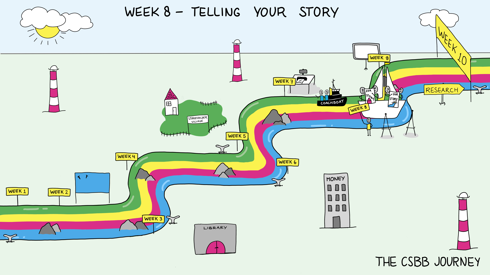

Week 1.8: Telling Your Story#
Scheduled components of this week:
Science spotlight
Workshop: Visual Communication
Workshop: Critical Editing and Feedback
Friday Symposium
Introduction and Goals#
Research only really “matters” if it is shared. How it is shared greatly influences its impact on the world and likelihood of getting funded. In previous weeks we’ve talked about what and why we want to share our ideas, in this week we’ll focus on the how. The topic of week 8 is Visualisation.
Two workshops, one titled “Visual Communication” and one titled “Critical Editing and Feedback” will be given this week to help with the goal of effective conveying of ideas.
When presenting information, in addition to understanding the narrative elements, it’s important to consider the visual elements. What is aesthetically pleasing, how much eye-catching is too much? Good design principles of using white space, fonts, images.
One of the most important writing/design skills is critical editing. If you become really skilled at editing you can edit your own work effectively, but it is always better to ask for help with this from others, especially when starting. And as a collaborator it’s important to develop your editing skills so you can contribute to making presentations better. No design or written document is perfect and there is always room (though not always time) for improvement.
Workshop: Visual Communication#
Overview#
Communicating scientific research often involves visualizing results or data. When explaining the research in a (poster) presentation, visuals are indispensable. This workshop provides guidelines for designing visuals. We will discuss key principles of theory of how we process visual information (based the dual coding theory and Mayer’s theory of multimedia learning) and analyse example visualisations from posters, papers and presentations. Next, students will apply these principles and practise the interplay between visual and verbal explanation by presenting their own slides.
Key Concepts#
Multimodal information processing
Effectively selecting and working with visuals in a presentation
Relevant Learning Goals#
Students understand key principles of processing visual information
Students can evaluate the use of visualisations on posters and slides
Students can present a slide with visual information in a clear way
Workshop: Critical Editing and Feedback#
Overview#
Collaborative writing in a team is a complex activity. It involves making clear agreements about the text, editing and giving feedback on each other’s work. The ingredients and storyline of your research should now be in place, and it is time to turn the document into a coherent, clear and attractive text. This workshop focuses on effective strategies for giving feedback on and revising a collaborative document. Working with your draft research proposals, we will discuss how to constructively give feedback on someone else’s text, how to trace style and readability issues with the ‘read aloud’ method and how to solve such readability issues. Furthermore, we will discuss how to ask for, receive and process constructive feedback. This involves accepting feedback on your text and determining what feedback is most valuable to process. After the workshop, time is reserved for writing consultations.
Key Concepts#
Providing constructive feedback on texts
Guidelines for academic writing style and readability
Accepting constructive feedback, and asking for it
Relevant Learning Goals#
Students apply constructive feedback on a text
Students apply revision and editing strategies to improve readability
Group Activity of the Week#
Finish draft of proposal. Get peer feedback on it and consult with communications expert. It is supposed to be only two pages long (excluding references). This means that you must write concisely and focus on the essential information. You may have to summarize many paragraphs.
Identify key text blocks and visuals you want to include on your poster.
Discussion Questions#
When reading a paper or watching a presentation, how much attention do you usually spend on the visuals? Why?
When writing a paper or preparing a presentation, at what point do you usually think of figures and tables as visual aids? How do you determine which information needs visual support?
How have you approached writing the research proposal as a project group? To what extent could you more effectively write together?
If you’re editing something for someone else, what is your method? How could you do better? When giving something to someone else to edit, what do you particularly want help on?
Writing Assignment#
Group#
Finish the draft of your proposal (2-3 pages)
Individual#
What do you think is important in writing a paper with a group? How well are you doing those things? What has been or is being a challenge? (½ page)
References#
TU Present:
Module Visualisations
Mayer, R. E. (2009). Multimedia learning (2nd ed.). Cambridge, England: Cambridge University Press.
LearningHouse (2019), Multimedia Learning Principles. https://ctl.wiley.com/wp-content/uploads/2016/07/MultimediaPrinciples_Summary.pdf, Accessed June 30, 2023. Adapted from Mayer (2009).
TU Write - Scientific Writing:
Visualising your research
Academic writing style (SPArCC style tutorial on scientific style)